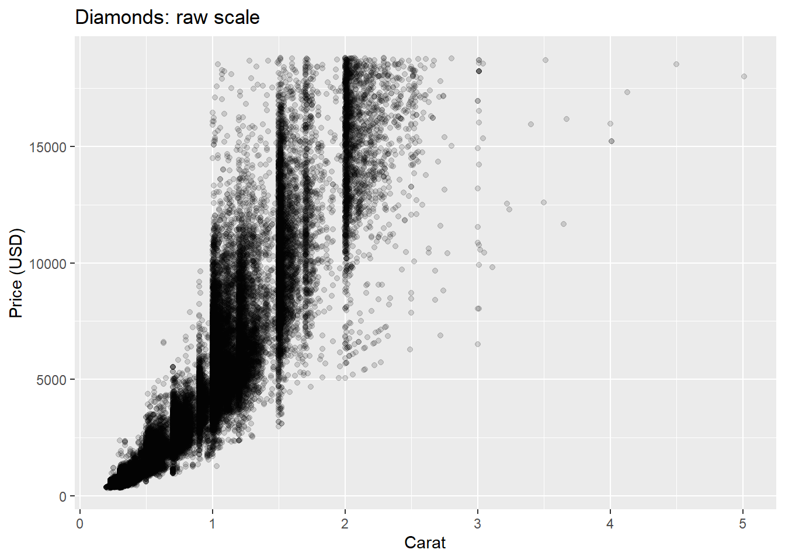
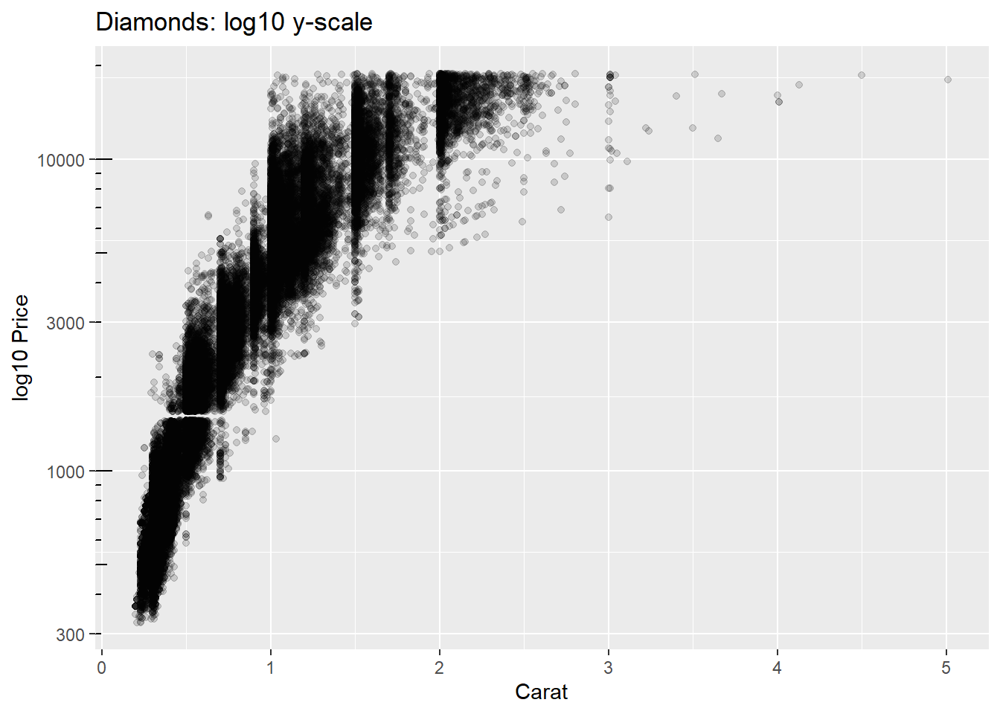
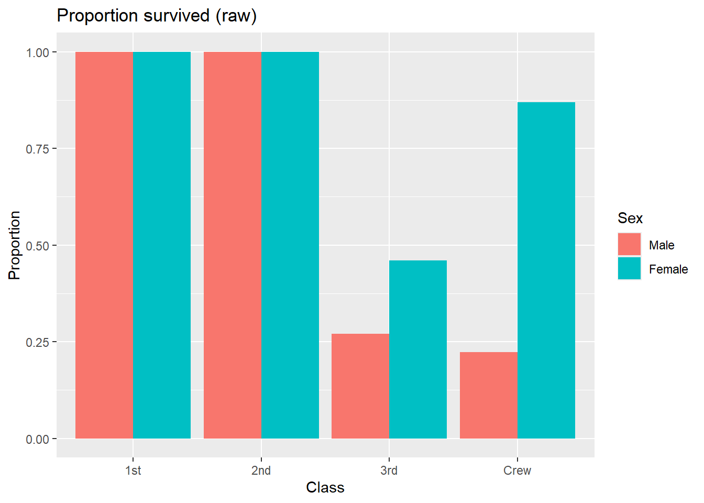
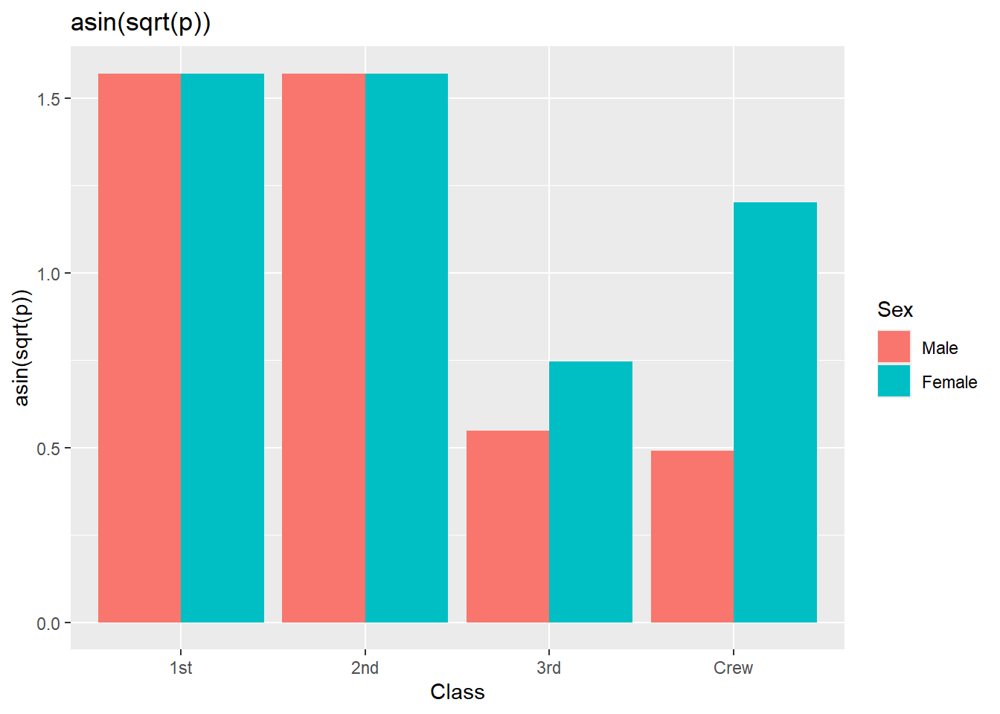
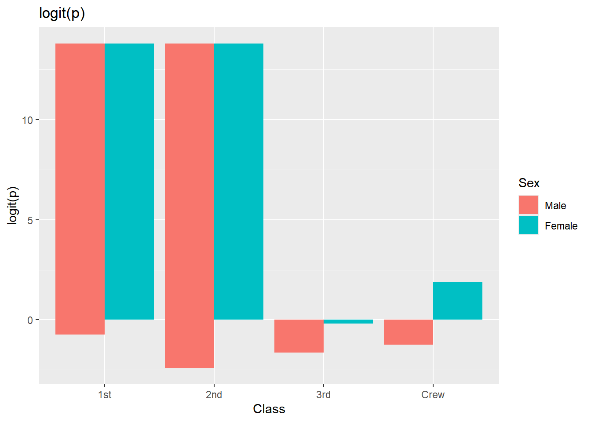

The same variable can serve different roles: e.g., quantile plots use value on x (interval) and rank on y (ordinal-as-interval for shape analysis).
2.3 Transformations: variable vs scale vs coordinate
Variable transformation: transform the data before any stat (e.g., log(x)).
Scale transformation: transform the axis mapping (e.g., scale_x_log10(); axis shows original units at log-spaced ticks).
Coordinate transformation: transform the geometry post-stat (e.g., coord_polar()), changes appearance not the statistic.
Rule of thumb: - If a statistical method assumes a distribution, consider variable/scale transforms before the stat. - If you only need a different view (e.g., polar), use coordinate transforms after the stat.
3 Part II — Linear, Categorical, and Time Scales
3.1 Categorical scales
Ordered vs unordered categories; explicit ordering for clarity; spacing and label placement.
In ggplot2: scale_x_discrete(limits=..., labels=...).
Extension: Implement a custom gamma probability scale by transforming y and plotting empirical fractiles against theoretical gamma quantiles.
6 Part V — Putting It Together
6.1 Choosing scales by semantic intent
When must bars start at zero? Only when ratio comparisons are intended.
When is non-zero baseline defensible? For interval comparisons, trend emphasis, or when zero is irrelevant.
Layered encodings: mixing scales for different aesthetics (e.g., log y for points, linear y for ribbon range — avoid misleading dual axes).
6.2 Case studies
6.2.1 Inequality & skew
Visualise income by log scale vs raw; discuss perception of inequality.
6.2.2 Ecology: body size vs metabolism
Allometry with log–log scaling; slope ~ scaling exponent.
6.2.3 Time-on-task dashboards
Irregular time units; week and month facets; seasonal cycles.
Mini-rubric for critique: scale appropriateness; tick/label clarity; transformation justification; reproducibility.
7 Part VI — Design Patterns & Anti-patterns
Patterns:
Use scale transforms to match model assumptions.
Show tick logic (log ticks, probability ticks) to aid decoding.
Make semantics explicit in axis titles (e.g., “log₁₀(Value)”).
Anti-patterns:
Logging data with zeros/negatives without clear strategy.
Dual y-axes with unrelated scales.
Ratio claims on interval scales.
7.1 # Part VII — Labs
All labs below are self-contained and use only datasets available in base R or the ggplot2 package (which ships with its own datasets). No internet access or external files are required.
7.2 Lab 1: Log and Power Scales in Practice
Aim: Compare the effect of logarithmic and power (variance-stabilising) scales on skewed and count data.
7.2.1 Task A — Log scale with skewed continuous data
Code
library(ggplot2)# Examine price vs carat on raw and log scalesp_raw <-ggplot(diamonds, aes(carat, price)) +geom_point(alpha =0.15) +labs(title ="Diamonds: raw scale", x ="Carat", y ="Price (USD)")p_log <-ggplot(diamonds, aes(carat, price)) +geom_point(alpha =0.15) +scale_y_log10() +annotation_logticks(sides ="l") +labs(title ="Diamonds: log10 y-scale", x ="Carat", y ="log10 Price")p_raw; p_log


Questions: How does the visible spread change across carat on raw vs log scales?
7.2.2 Task B — Power/sqrt scale with overdispersed counts
Deliverable: Explain why sqrt/log scales improved interpretability (or not), and whether medians/intervals are easier to compare.
7.3 Lab 2: Proportions — arcsine vs logit
Aim: Explore transformations for proportions bounded in [0,1].
Dataset:Titanic (built-in contingency table).
7.3.1 Prepare data
Code
# Convert to data frame and compute group-wise proportions of survivalTT <-as.data.frame(Titanic)TT <- tidyr::pivot_wider(TT, names_from = Survived, values_from = Freq)TT <- dplyr::mutate(TT, total = No + Yes, prop = Yes/total)head(TT)
# A tibble: 6 × 7
Class Sex Age No Yes total prop
<fct> <fct> <fct> <dbl> <dbl> <dbl> <dbl>
1 1st Male Child 0 5 5 1
2 2nd Male Child 0 11 11 1
3 3rd Male Child 35 13 48 0.271
4 Crew Male Child 0 0 0 NaN
5 1st Female Child 0 1 1 1
6 2nd Female Child 0 13 13 1
7.3.2 Visualise raw vs transformed
Code
library(ggplot2)trans_asin <-function(p) asin(sqrt(p))trans_logit <-function(p) qlogis(p)p1 <-ggplot(TT, aes(Class, prop, fill = Sex)) +geom_col(position =position_dodge()) +labs(title ="Proportion survived (raw)", y ="Proportion")p2 <-ggplot(TT, aes(Class, trans_asin(prop), fill = Sex)) +geom_col(position =position_dodge()) +labs(title ="asin(sqrt(p))", y ="asin(sqrt(p))")# Clip away 0/1 exactly to avoid +/-Inf on logitTT_eps <- dplyr::mutate(TT, prop =pmin(pmax(prop, 1e-6), 1-1e-6))p3 <-ggplot(TT_eps, aes(Class, trans_logit(prop), fill = Sex)) +geom_col(position =position_dodge()) +labs(title ="logit(p)", y ="logit(p)")p1; p2; p3



Questions to answer:
Which transform yields more homogeneous variance across classes/sex?
Which is easier to explain to a non-technical audience? Justify.
7.4 Lab 3: Time scales & calendar irregularities
Aim: Handle dates and monthly time series while choosing legible breaks and labels.
library(ggplot2)library(dplyr)AP <- AirPassengers# Build a Date vector from time series indexstart_year <-floor(time(AP))[1]start_month <-cycle(AP)[1]idx <-seq(as.Date(sprintf("%d-%02d-01", start_year, start_month)), by ="1 month", length.out =length(AP))AP_df <-data.frame(date = idx, passengers =as.numeric(AP))head(AP_df)